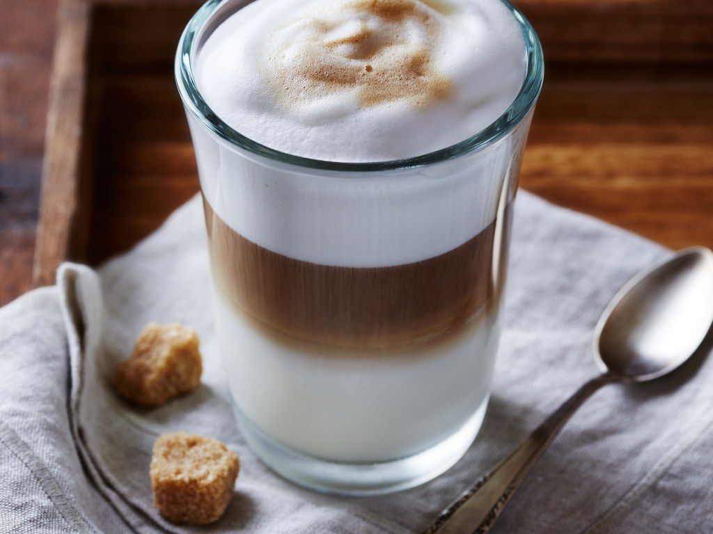
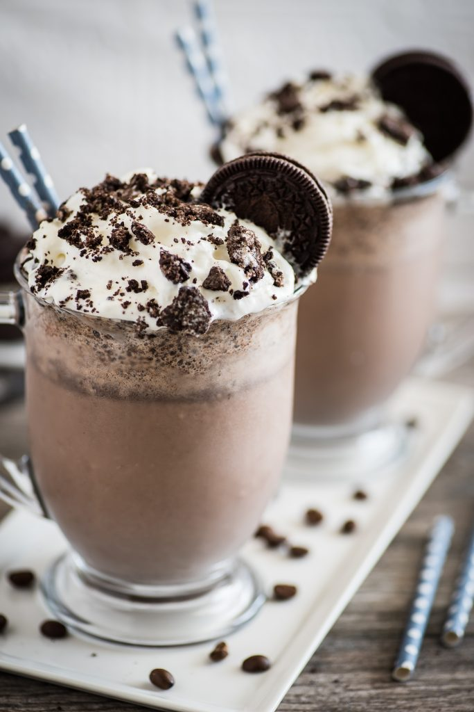

LATTE
A latte is a coffee drink made with espresso and steamed milk. The term as used in English is a shortened form of the Italian caffè e latte, caffelatte or caffellatte, which means "milk coffee".
- 
MACHIATO
Caffè macchiato, sometimes called espresso macchiato, is an espresso coffee drink with a small amount of milk, usually foamed.

AMERICANO
Caffè Americano is a type of coffee drink prepared by diluting an espresso with hot water, giving it a similar strength to, but different flavor from, traditionally brewed coffee.

GREEN TEA
Green tea is a type of tea that is made from Camellia sinensis leaves and buds that have not undergone the same withering and oxidation process used to make oolong teas and black teas.

BLACK
Black tea is a type of tea that is more oxidized than oolong, green, and white teas. Black tea is generally stronger in flavour than the less oxidized teas.

Yellow tea is oxidize at a slow rate for a brief period before the tea is heated fully to denature the oxidizing enzymes, producing a far more mellow taste than is found in most green teas
- 
COOKIES AND CREAM MILKSHAKE
Cookies and cream (or cookies 'n cream) is a variety of ice cream and milkshake based on flavoring from chocolate sandwich cookies.

CHOCOLATE MILKSHAKE
This rich chocolate-based beverage is made and packed with ice cream and milk and delivers a stone-cold, divine aroma that it relishes with other desserts.

STRAWBERRY MILKSHAKE
Strawberry is a variety of ice cream and milkshake based on flavoring of the strawberry fruit.